Modelling the air sources with HYSPLIT#
Preamble#
Imports#
import shutil
import shapely
import pysplit
import warnings
import numpy as np
import pandas as pd
import plotnine as p9
import geopandas as gpd
from glob import glob
from functools import partial
from itertools import product
from mizani.breaks import date_breaks
from shapely.geometry import LineString, Polygon
from mizani.formatters import date_format, custom_format
from matplotlib_inline.backend_inline import set_matplotlib_formats
Presets#
p9.options.set_option('dpi', 600)
set_matplotlib_formats('retina')
p9.options.set_option('figure_size', (4, 3))
p9.theme_set(p9.theme_bw() + p9.theme(axis_text=p9.element_text(size=7),
axis_title=p9.element_text(size=9)))
# Not advisable, but in this case the warnings become too much.
warnings.filterwarnings("ignore")
# negative log function for ease of plotting later
def negative_log(x):
return np.sign(x) * np.log10(np.abs(x))
Loading data#
shape_url = "https://naturalearth.s3.amazonaws.com/50m_cultural/ne_50m_admin_0_countries.zip"
world = gpd.read_file(shape_url)
metals = pd.read_csv('../data/long_metals.csv', index_col=0)
HYSPLIT_DIR = '/home/afontal/utils/hysplit/exec/hyts_std'
HYSPLIT_WORKING = '/home/afontal/utils/hysplit/working'
METEO_DIR = '/home/afontal/utils/hysplit/meteo/gdas1'
OUT_DIR = '/home/afontal/projects/kd-metals-swc/output/trajectories'
Analysis#
Kumamoto (Mar-Apr 2011)#
Trajectory Generation#
We are going to generate 96 hour backtrajectories starting in Kumamoto (32°48’N, 130°41’E), at an initial height of 10m. We will generate a total of 8 trajectories per day to be able to estimate the daily variability in air sources.
pysplit.generate_bulktraj('kumamoto',
hysplit_working=HYSPLIT_WORKING,
hysplit=HYSPLIT_DIR,
output_dir=f'{OUT_DIR}/kumamoto',
meteo_dir=METEO_DIR,
years=[2011],
months=[3, 4],
meteoyr_2digits=True,
hours=range(0, 24, 3),
altitudes=[10],
coordinates=(32.80589, 130.69181),
run=-96,
meteo_bookends=([4, 5], []),
get_reverse=True
)
all_trajs = pysplit.make_trajectorygroup(glob(f'../output/trajectories/kumamoto/kumamoto*'))
reverse_trajs = pysplit.make_trajectorygroup(glob(f'../output/trajectories/kumamoto/reversetraj/*'))
all_trajectories_data = (pd.concat([t.data.assign(traj_id=i) for i, t in enumerate(all_trajs)])
.drop(columns=['Temperature_C', 'Temperature', 'Mixing_Depth'])
.assign(start_time=lambda dd: dd.DateTime - pd.to_timedelta(dd.Timestep, unit='h'))
.assign(date=lambda dd: pd.to_datetime(dd.start_time.dt.date))
.assign(hour=lambda dd: dd.start_time.dt.hour)
)
reverse_trajectories_data = (pd.concat([t.data.assign(traj_id=i) for i, t in enumerate(reverse_trajs)])
.drop(columns=['Temperature_C', 'Temperature', 'Mixing_Depth'])
.assign(start_time=lambda dd: dd.DateTime - pd.to_timedelta(dd.Timestep, unit='h') + pd.to_timedelta(96, unit='h'))
.assign(date=lambda dd: pd.to_datetime(dd.start_time.dt.date))
.assign(hour=lambda dd: dd.start_time.dt.hour)
.assign(Timestep=lambda dd: dd.Timestep + 96)
)
trajectory_lines = (all_trajectories_data
.groupby(['traj_id', 'start_time'], as_index=False)
['geometry']
.apply(lambda x: LineString([(i.x, i.y) for i in x.to_list()]))
.assign(date=lambda dd: pd.to_datetime(dd.start_time.dt.date))
.assign(hour=lambda dd: dd.start_time.dt.hour)
)
Example of a day of trajectories#
(all_trajectories_data
.loc[lambda dd: dd.date == '2011-03-27']
.pipe(lambda dd: p9.ggplot(dd)
+ p9.geom_map(p9.aes(color='geometry.z', fill='geometry.z'), size=.2)
+ p9.geom_map(world, alpha=.1, size=.1)
+ p9.theme(figure_size=(4, 2.5), title=p9.element_text(size=8), panel_grid=p9.element_blank())
+ p9.labs(title=f'96h backtrajectories on 2011-03-27', fill='Height', color='Height')
+ p9.scale_x_continuous(labels=custom_format('{:0g}°E'), limits=(90, 150))
+ p9.scale_y_continuous(labels=custom_format('{:0g}°N'), limits=(30, 60))
+ p9.scale_fill_continuous(labels=custom_format('{:0g}m'))
+ p9.scale_color_continuous(labels=custom_format('{:0g}m'))
)
)
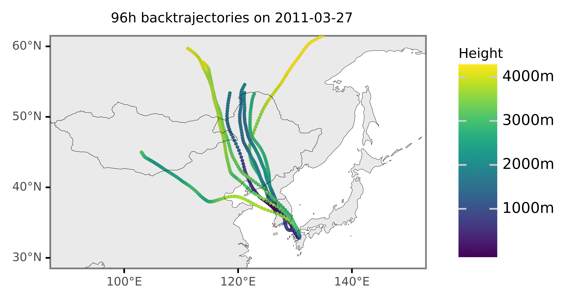
(trajectory_lines
.loc[lambda dd: dd.date == '2011-03-27']
.pipe(lambda dd: p9.ggplot(dd)
+ p9.geom_map(p9.aes(color='hour'))
+ p9.geom_map(world, alpha=.1, size=.1)
+ p9.theme(figure_size=(3.5, 2),
title=p9.element_text(size=8),
panel_grid=p9.element_blank(),
legend_key_size=9, legend_text=p9.element_text(size=6, va='center'))
+ p9.labs(title=f'96h backtrajectories on 2011-03-10', fill='Height', color='Hour')
+ p9.scale_x_continuous(labels=custom_format('{:0g}°E'), limits=(90, 150))
+ p9.scale_y_continuous(labels=custom_format('{:0g}°N'), limits=(30, 60))
+ p9.scale_color_continuous(labels=custom_format('{:0g}:00'))
)
)
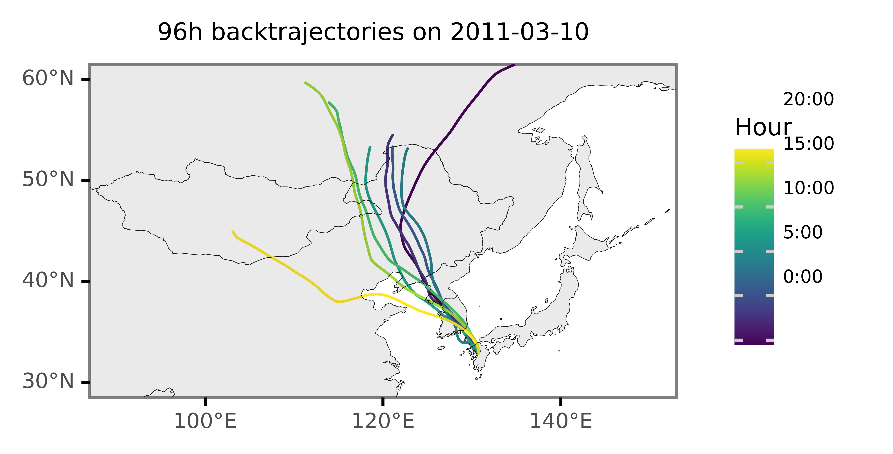
Epidemiological context (KD)#
kd_kumamoto = (pd.read_csv('../data/kd_ts.csv', index_col=0)
.assign(date=lambda dd: pd.to_datetime(dd['date']))
)
kd_kumamoto_2011 = (pd.read_excel('../data/kd_daily.xlsx')
.assign(date=lambda dd: pd.to_datetime(dd['Dates']))
.loc[lambda dd: (dd.date >= '2011') & (dd.date < '2012')]
.assign(cases=lambda dd: dd[43].astype(int))
[['date', 'cases']]
)
dates = pd.to_datetime(metals.date)
(p9.ggplot(kd_kumamoto_2011)
+ p9.aes('date', 'cases')
+ p9.annotate(geom='rect', ymin=-np.inf, ymax=np.inf, xmin=dates.min(), xmax=dates.max(), alpha=.7)
+ p9.annotate(geom='text', y=5.5, x=dates.median(), label='Sampled\ndates', size=5)
+ p9.geom_line(size=.3, alpha=1)
+ p9.scale_x_datetime(breaks=date_breaks('3 months'))
+ p9.theme(figure_size=(5, 2), title=p9.element_text(size=9), dpi=300)
+ p9.labs(x='', y='KD cases', title='Daily KD cases in Kumamoto (2011)')
)
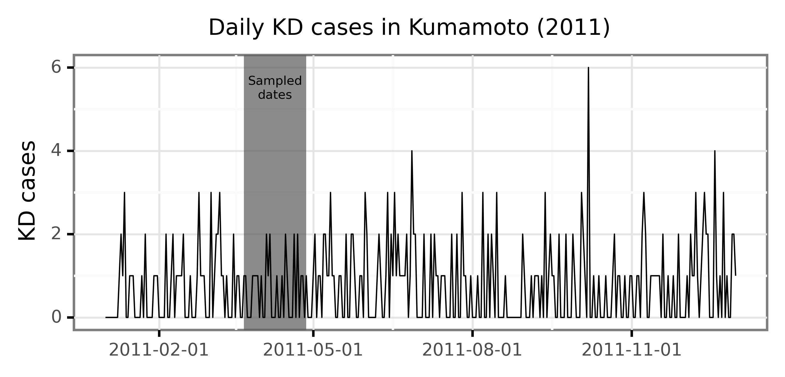
(kd_kumamoto
.melt(['date', 'kd_rolling_4'])
.assign(variable=lambda dd: dd.variable.str[-1].astype(int))
.pipe(lambda dd: p9.ggplot(dd)
+ p9.aes('date', 'value', fill='variable')
+ p9.geom_line(p9.aes(y='kd_rolling_4'))
+ p9.geom_col(alpha=.8)
+ p9.scale_fill_continuous('plasma')
+ p9.scale_x_datetime(breaks=date_breaks('2 weeks'))
+ p9.labs(x='', y='KD cases', fill='Lag')
+ p9.theme(figure_size=(4, 2), legend_key_size=7,
legend_text=p9.element_text(size=6, va='bottom'),
legend_title=p9.element_text(size=8))
)
)
Selecting days of KD maxima and minima#
dates_minima = kd_kumamoto.loc[lambda dd: dd.kd_rolling_4 <= 0].date
dates_maxima = kd_kumamoto.loc[lambda dd: dd.kd_rolling_4 >= 5].date
min_max_trajectories = (trajectory_lines
.loc[trajectory_lines.date.isin(dates_minima)]
.assign(group='Minima')
.append(trajectory_lines
.loc[trajectory_lines.date.isin(dates_maxima)]
.assign(group='Maxima'))
.dropna()
.pipe(gpd.GeoDataFrame)
)
(p9.ggplot(kd_kumamoto)
+ p9.aes('date', 'kd_rolling_4')
+ p9.geom_rect(p9.aes(fill='group', ymin=-np.inf, ymax=np.inf,
xmin='date - pd.to_timedelta("12 h")', xmax='date + pd.to_timedelta("12 h")'),
inherit_aes=False, alpha=.7, data=min_max_trajectories[['date', 'group']].drop_duplicates())
+ p9.geom_line(size=.7)
+ p9.geom_point(size=.5)
+ p9.scale_fill_manual(['#B2182B', '#2166AC'])
+ p9.scale_x_datetime(breaks=date_breaks('2 weeks'))
+ p9.labs(x='', y='KD cases', fill='')
+ p9.theme(figure_size=(6.5, 2), panel_grid=p9.element_blank())
).draw().savefig('../output/figures/kumamoto_kd_minmax.pdf', bbox_inches='tight')
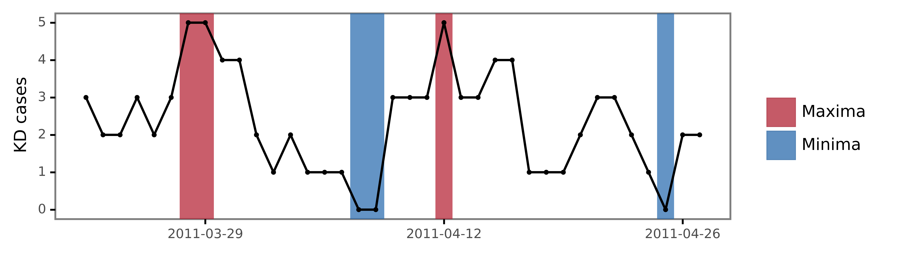
Representation of all trajectories#
(trajectory_lines
.loc[lambda dd: dd.date.isin(kd_kumamoto.date)]
.assign(date=lambda dd: dd.date.astype(str))
.pipe(lambda dd:
p9.ggplot(dd)
+ p9.geom_map(alpha=.8)
+ p9.annotate(geom='point', size=.2, color='red', y=32.80589, x=130.69181)
+ p9.geom_map(world, alpha=.1, size=.1)
+ p9.theme(figure_size=(9, 5.5),
title=p9.element_text(size=8),
axis_text=p9.element_text(size=6),
panel_grid=p9.element_blank(),
strip_text=p9.element_text(size=7))
+ p9.labs(title=f'', x='', y='')
+ p9.facet_wrap('date', ncol=8)
+ p9.scale_x_continuous(labels=custom_format('{:0g}°E'),
limits=(90, 150),
breaks=[95, 120, 145])
+ p9.scale_y_continuous(labels=custom_format('{:0g}°N'),
limits=(20, 60)))
)

Backtrajectories of KD maxima vs minima#
(p9.ggplot(min_max_trajectories)
+ p9.geom_map(p9.aes(color='group', fill='group'), alpha=.8)
+ p9.geom_map(size=.1, alpha=.1, data=world)
+ p9.labs(fill='', color='')
+ p9.scale_fill_manual(['#B2182B', '#2166AC'])
+ p9.scale_color_manual(['#B2182B', '#2166AC'])
+ p9.guides(fill=False, color=False)
+ p9.scale_x_continuous(labels=custom_format('{:0g}°E'),
limits=(80, 160),
breaks=[80, 105, 130, 155])
+ p9.scale_y_continuous(labels=custom_format('{:0g}°N'),
limits=(15, 65),
breaks=[25, 40, 55])
+ p9.theme(title=p9.element_text(size=9),
panel_grid=p9.element_blank(),
figure_size=(3, 2.5))
).draw().savefig('../output/figures/kumamoto_trajectories.pdf', bbox_inches='tight')
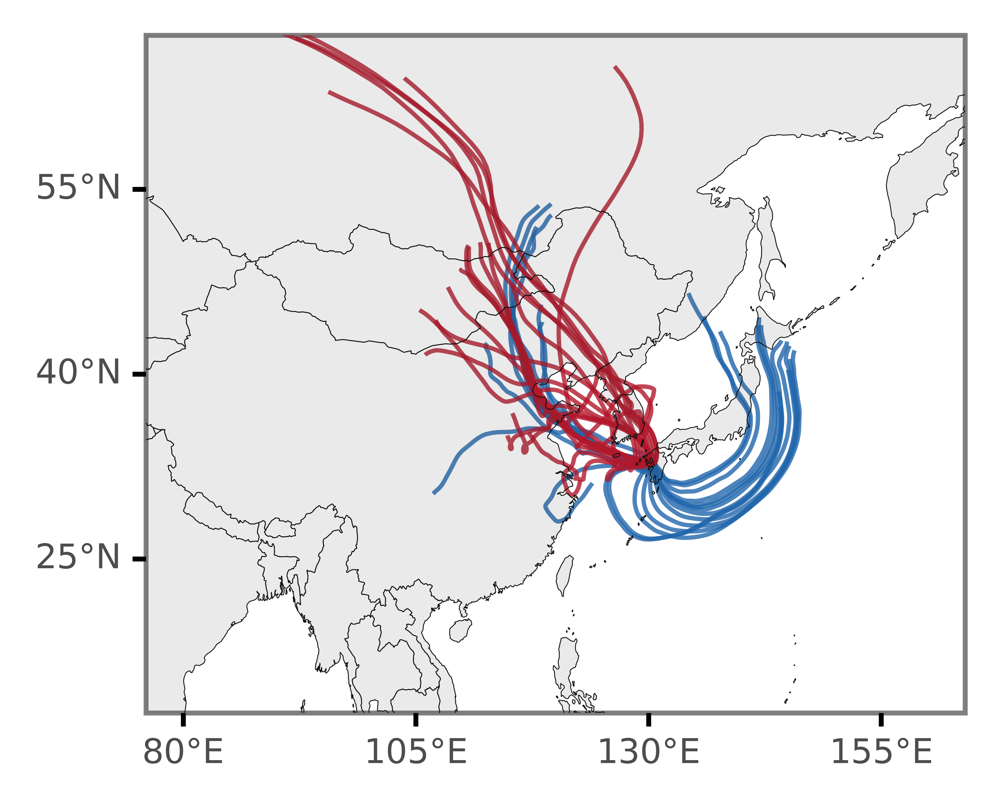
Computing differences by grid cells#
margin = 1
xmin, ymin, xmax, ymax = min_max_trajectories.total_bounds.round() + [-margin, -margin, margin, margin]
n_cells = 60
cell_size = (xmax - xmin) / n_cells
grid_cells = []
for x0 in np.arange(xmin, xmax + cell_size, cell_size ):
for y0 in np.arange(ymin, ymax + cell_size, cell_size):
# bounds
x1 = x0 - cell_size
y1 = y0 + cell_size
grid_cells.append(shapely.geometry.box(x0, y0, x1, y1))
grid = (gpd.GeoDataFrame(grid_cells, columns=['geometry'])
.assign(cell=lambda dd: dd.geometry)
.assign(x=lambda dd: dd.cell.centroid.x, y=lambda dd: dd.cell.centroid.y)
)
x_y_poly = grid[['x', 'y', 'cell']].drop_duplicates()
grid_intersections = gpd.sjoin(min_max_trajectories, grid, op='intersects')
grid_intersections.groupby(['x', 'y', 'group']).apply(lambda dd: dd.shape[0])
x y group
79.725 70.275 Maxima 1
80.875 70.275 Maxima 2
82.025 69.125 Maxima 1
70.275 Maxima 2
83.175 69.125 Maxima 1
..
146.425 34.625 Minima 2
35.775 Minima 3
36.925 Minima 3
38.075 Minima 2
39.225 Minima 1
Length: 608, dtype: int64
Exploration of the yearly seasonality of
(grid_intersections
.groupby(['x', 'y', 'group'])
.apply(lambda dd: dd.shape[0])
.rename('n')
.reset_index()
.pivot(['x', 'y'], 'group', 'n')
.fillna(0)
.assign(diff=lambda dd: dd['Maxima'] - dd['Minima'])
.assign(fc=lambda dd: np.log2(dd['Maxima'] / dd['Minima']))
.sort_values('diff')
.reset_index()
.merge(x_y_poly)
.assign(total_n=lambda dd: dd['Maxima'] + dd['Minima'])
.loc[lambda dd: dd.total_n >= 0]
.sort_values('fc')
.pipe(lambda dd:
p9.ggplot(dd)
+ p9.geom_map(p9.aes(fill='diff', geometry='cell'), size=.0)
+ p9.geom_map(data=world, size=.1, alpha=.1)
+ p9.scale_fill_continuous('RdBu_r', limits=(-5, 5), breaks=[-5, 0, 5])
+ p9.scale_alpha_continuous(trans='log10')
+ p9.labs(fill='$I_{max} - I_{min}$', x='', y='')
+ p9.scale_x_continuous(labels=custom_format('{:0g}°E'),
limits=(80, 160),
breaks=[80, 105, 130, 155])
+ p9.scale_y_continuous(labels=custom_format('{:0g}°N'),
limits=(15, 65),
breaks=[25, 40, 55])
+ p9.theme(panel_grid=p9.element_blank(), plot_background=p9.element_blank(),
legend_background=p9.element_blank(),
legend_key_size=8,
legend_text=p9.element_text(size=6, va='bottom', ha='left'),
legend_title_align='center',
legend_title=p9.element_text(size=7),
figure_size=(3, 2.5),
legend_position='bottom',
axis_text_y=p9.element_blank(),
axis_ticks_major_y=p9.element_blank())
)
).draw().savefig('../output/figures/kumamoto_max_minus_min.pdf', bbox_inches='tight')
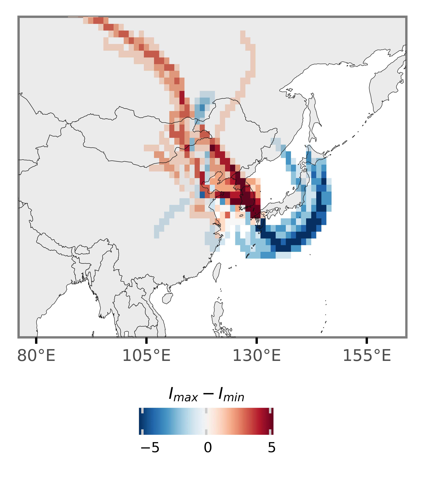
(grid_intersections
.groupby(['x', 'y', 'group'])
.apply(lambda dd: dd.shape[0])
.rename('n')
.reset_index()
.merge(x_y_poly)
.assign(n=lambda dd: np.where(dd.group=='Minima', -dd.n, dd.n))
.assign(n=lambda dd: negative_log(dd.n))
.pipe(lambda dd: p9.ggplot(dd)
+ p9.geom_map(p9.aes(fill='n', geometry='cell'), size=0)
+ p9.geom_map(data=world, size=.1, alpha=.1)
+ p9.facet_wrap(['group'], ncol=2)
+ p9.labs(fill='')
+ p9.scale_fill_continuous('RdBu_r', limits=(-2, 2))
+ p9.scale_alpha_continuous(trans='sqrt')
+ p9.guides(fill=False, alpha=False)
+ p9.scale_x_continuous(labels=custom_format('{:0g}°E'),
limits=(90, 160),
breaks=[105, 130, 155])
+ p9.scale_y_continuous(labels=custom_format('{:0g}°N'),
limits=(20, 65),
breaks=[25, 40, 55]))
+ p9.theme(panel_grid=p9.element_blank(),
figure_size=(4, 1.5),
axis_text=p9.element_text(size=5),
strip_text=p9.element_text(size=7))
).draw().savefig('../output/figures/kumamoto_grids.pdf', bbox_inches='tight')
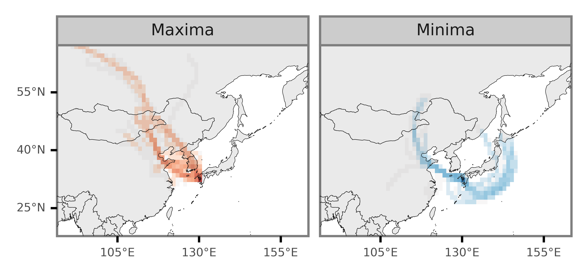
Trajectories height distribution#
min_max_trajectories_data = (all_trajectories_data
.loc[lambda dd: dd.date.isin(dates_minima)]
.assign(group='KD Minima')
.append(all_trajectories_data
.loc[lambda dd: dd.date.isin(dates_maxima)]
.assign(group='KD Maxima'))
)
pd.read_json
(min_max_trajectories_data
.assign(height=lambda dd: dd.geometry.z)
.pipe(lambda dd: p9.ggplot(dd)
+ p9.aes('-Timestep', 'height', color='group')
+ p9.scale_color_manual(['#B2182B', '#2166AC'])
+ p9.guides(color=False)
+ p9.geom_line(p9.aes(group='traj_id'), alpha=.7, size=.5)
+ p9.labs(x='Hours since backtrajectory start', y='Height (m)', color='')
+ p9.theme(figure_size=(2, 1.5),
axis_text=p9.element_text(size=6),
axis_title=p9.element_text(size=6),
legend_text=p9.element_text(size=6),
legend_key_size=8)
)
)
(min_max_trajectories_data
.loc[lambda dd: dd['date'].isin(kd_kumamoto.date)]
.assign(height=lambda dd: dd.geometry.z)
.pipe(lambda dd: p9.ggplot(dd)
+ p9.aes('-Timestep', 'height')
+ p9.stat_summary(geom='line', fun_y=np.median, size=.9)
+ p9.stat_summary(geom='ribbon',
fun_ymin=partial(np.percentile, q=25),
fun_ymax=partial(np.percentile, q=75),
fill='black',
alpha=.5)
+ p9.stat_summary(geom='ribbon',
fun_ymin=partial(np.percentile, q=10),
fun_ymax=partial(np.percentile, q=90),
fill='black',
alpha=.3)
+ p9.labs(x='Hours since backtrajectory start', y='Height (m)')
+ p9.theme(figure_size=(3, 2))
)
)
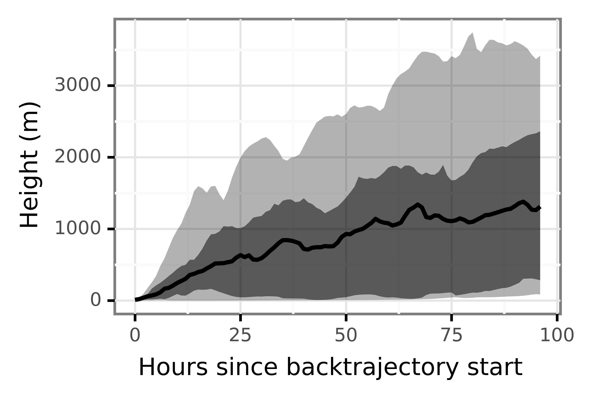
(min_max_trajectories_data
.loc[lambda dd: dd['date'].isin(kd_kumamoto.date)]
.assign(height=lambda dd: dd.geometry.z)
.pipe(lambda dd: p9.ggplot(dd)
+ p9.aes('-Timestep', 'height')
+ p9.facet_wrap('group')
+ p9.stat_summary(geom='line', fun_y=np.median, size=.9)
+ p9.stat_summary(geom='ribbon',
fun_ymin=partial(np.percentile, q=25),
fun_ymax=partial(np.percentile, q=75),
fill='black',
alpha=.5)
+ p9.stat_summary(geom='ribbon',
fun_ymin=partial(np.percentile, q=10),
fun_ymax=partial(np.percentile, q=90),
fill='black',
alpha=.3)
+ p9.labs(x='Hours since backtrajectory start', y='Height (m)')
+ p9.theme(figure_size=(4, 1.5), dpi=300, axis_text=p9.element_text(size=6),
axis_title=p9.element_text(size=7), legend_text=p9.element_text(size=6),
legend_key_size=8)
)
)
(min_max_trajectories_data
.pipe(lambda dd: p9.ggplot(dd)
+ p9.geom_map(data=world, size=.1, alpha=.1)
+ p9.geom_point(p9.aes('geometry.x', 'geometry.y', color='geometry.z'), size=.4)
+ p9.facet_wrap('group')
+ p9.scale_x_continuous(labels=custom_format('{:0g}°E'),
limits=(90, 150))
+ p9.scale_y_continuous(labels=custom_format('{:0g}°N'),
limits=(20, 65))
+ p9.labs(x='', y='', color='Height (m)')
+ p9.theme(figure_size=(4, 1.5),
legend_key_size=9,
legend_title=p9.element_text(size=8),
legend_text=p9.element_text(size=6, va='baseline'), dpi=300)
)
)
(gpd
.sjoin(min_max_trajectories_data, grid, op='within')
.assign(height=lambda dd: dd.geometry.z)
.groupby(['group', 'x', 'y'])
['height'].mean()
.reset_index()
.merge(x_y_poly)
.pipe(lambda dd: p9.ggplot(dd)
+ p9.geom_map(data=world, size=.1, alpha=.1)
+ p9.geom_map(p9.aes(geometry='cell', fill='height'), alpha=.8, color=None)
+ p9.scale_x_continuous(labels=custom_format('{:0g}°E'),
limits=(90, 150))
+ p9.scale_y_continuous(labels=custom_format('{:0g}°N'),
limits=(20, 65))
+ p9.labs(x='', y='', fill='Height (m)')
+ p9.facet_wrap('group')
+ p9.guides(fill=False)
+ p9.theme(figure_size=(4, 1.5),
legend_key_size=9,
legend_title=p9.element_text(size=8),
legend_text=p9.element_text(size=6, va='baseline'), dpi=300)
)
)
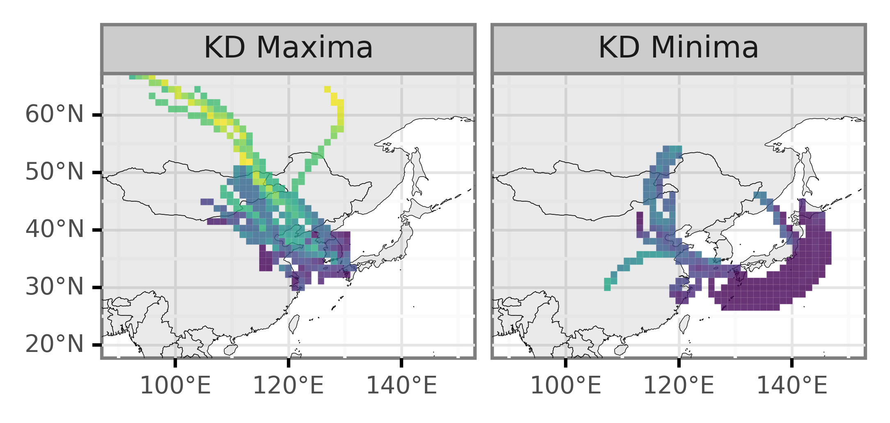
All of Japan (2010-2016)#
kd_ts = (pd.read_excel('../data/kd_daily.xlsx')
.assign(date=lambda dd: pd.to_datetime(dd['Dates']))
.assign(cases=lambda dd: dd['Japan'].astype(int))
[['date', 'cases']]
.loc[lambda dd: dd['date']>='2010']
)
(p9.ggplot(kd_ts)
+ p9.aes('date', 'cases')
+ p9.geom_line(size=.1)
+ p9.theme(figure_size=(6, 2))
+ p9.labs(x='', y='KD cases', title='KD admissions in all of Japan')
+ p9.scale_x_datetime(breaks=date_breaks('2 years'))
+ p9.annotate('rect', xmin='2011-03-22', xmax='2011-04-27', ymin=-np.inf, ymax=np.inf, alpha=.2, size=.2)
)
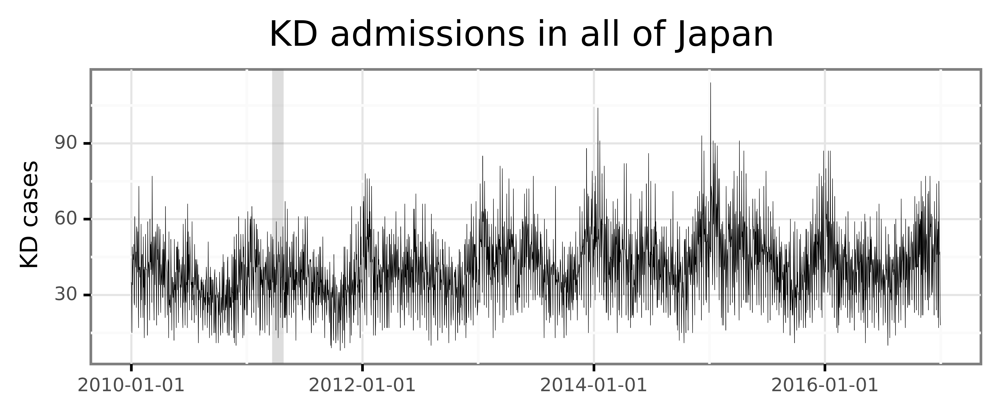
full_min_max_ts = (kd_ts
.sort_values('cases')
.reset_index(drop=True)
.assign(q=lambda dd: dd.index / dd.shape[0])
.sort_values('date')
.assign(group=lambda dd: dd.q.apply(lambda q: 'Maxima' if q >= .95 else ('Minima' if q <= .05 else pd.NA)))
.dropna()
)
(p9.ggplot(kd_ts.query('date >= "2011-03-22"').query('date <= "2011-04-27"'))
+ p9.aes('date', 'cases')
# + p9.geom_rect(p9.aes(fill='group', ymin=-np.inf, ymax=np.inf,
# xmin='date - pd.to_timedelta("12 h")', xmax='date + pd.to_timedelta("12 h")'),
# inherit_aes=False, alpha=.8, data=full_min_max_ts)
+ p9.geom_line(size=.5)
+ p9.geom_point(size=.4)
+ p9.theme(figure_size=(6.5, 2), panel_grid=p9.element_blank())
+ p9.scale_fill_manual(['#B2182B', '#2166AC'])
+ p9.guides(fill=False)
+ p9.labs(x='', y='KD admissions', fill='', title='')
+ p9.scale_x_datetime(breaks=date_breaks('2 weeks'))
)
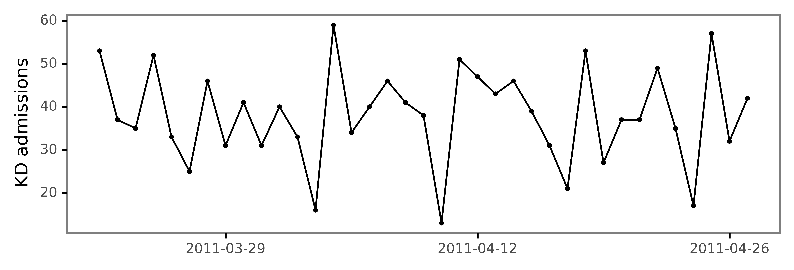
(p9.ggplot(kd_ts)
+ p9.aes('date', 'cases')
+ p9.geom_rect(p9.aes(fill='group', ymin=-np.inf, ymax=np.inf,
xmin='date - pd.to_timedelta("12 h")', xmax='date + pd.to_timedelta("12 h")'),
inherit_aes=False, alpha=.8, data=full_min_max_ts)
+ p9.geom_line(size=.1)
+ p9.theme(figure_size=(6.5, 2), panel_grid=p9.element_blank())
+ p9.scale_fill_manual(['#B2182B', '#2166AC'])
+ p9.guides(fill=False)
+ p9.labs(x='', y='KD cases', fill='')
+ p9.scale_x_datetime(breaks=date_breaks('2 years'))
).draw().savefig('../output/figures/japan_kd_minmax.pdf', bbox_inches='tight')
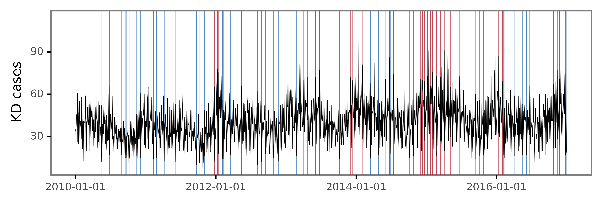
for year, month in product(range(2010, 2017), range(1, 13)):
pysplit.generate_bulktraj('tokyo',
hysplit_working=HYSPLIT_WORKING,
hysplit=HYSPLIT_DIR,
output_dir=f'{OUT_DIR}/japan',
meteo_dir=METEO_DIR,
years=[year],
months=[month],
meteoyr_2digits=True,
hours=[0, 6, 12, 18],
altitudes=[10],
coordinates=(35.68, 139.65),
run=-96,
meteo_bookends=([4, 5], [])
)
for date in full_min_max_ts.date:
date = str(date).replace('-', '').split(' ')[0]
for file in glob(f'../output/trajectories/japan/*{date}*'):
shutil.copy(file, '../output/trajectories/japan/min_max_dates/')
relevant_trajs = pysplit.make_trajectorygroup(glob('../output/trajectories/japan/min_max_dates/*'))
relevant_trajectories_data = (
pd.concat([t.data.assign(traj_id=i) for i, t in enumerate(relevant_trajs)])
.drop(columns=['Temperature_C', 'Temperature', 'Mixing_Depth'])
.assign(start_time=lambda dd: dd.DateTime - pd.to_timedelta(dd.Timestep, unit='h'))
.rename(columns={'start_time': 'date'})
.loc[lambda dd: dd.date.isin(full_min_max_ts.date)]
)
full_trajectory_lines = (relevant_trajectories_data
.groupby(['traj_id', 'date'], as_index=False)
['geometry']
.apply(lambda x: LineString([(i.x, i.y) for i in x.to_list()]))
.assign(date=lambda dd: pd.to_datetime(dd.date.dt.date))
.assign(hour=lambda dd: dd.date.dt.hour)
.merge(full_min_max_ts)
.pipe(gpd.GeoDataFrame)
)
full_trajectory_lines.groupby('group').apply(lambda dd: dd.shape[0]) / 4
group
Maxima 31.75
Minima 32.00
dtype: float64
(p9.ggplot(full_trajectory_lines)
+ p9.geom_map(p9.aes(color='group', fill='group'), alpha=.8)
+ p9.geom_map(size=.1, alpha=.1, data=world)
+ p9.labs(fill='', color='')
+ p9.scale_fill_manual(['#B2182B', '#2166AC'])
+ p9.scale_color_manual(['#B2182B', '#2166AC'])
+ p9.guides(fill=False, color=False)
+ p9.theme(title=p9.element_text(size=9), panel_grid=p9.element_blank(), figure_size=(3, 2.5),
plot_background=p9.element_blank())
+ p9.scale_x_continuous(labels=custom_format('{:0g}°E'),
limits=(80, 160), breaks=[80, 105, 130, 155])
+ p9.scale_y_continuous(labels=custom_format('{:0g}°N'),
limits=(15, 65), breaks=[25, 40, 55])
).draw().savefig('../output/figures/japan_min_max_trajectories.pdf', bbox_inches='tight')
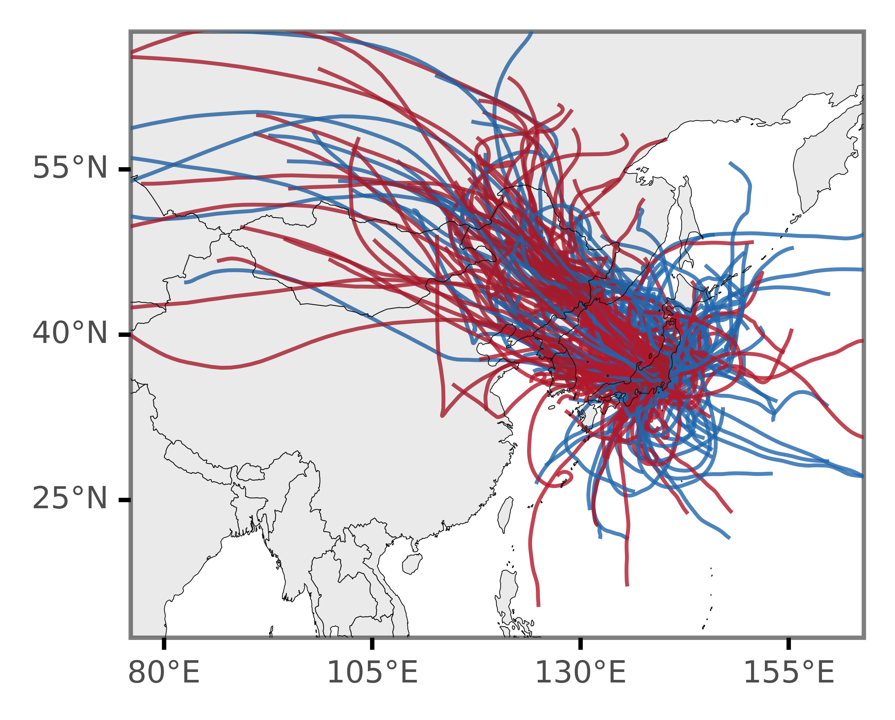
margin = 1
xmin, ymin, xmax, ymax = full_trajectory_lines.total_bounds.round() + [-margin, -margin, margin, margin]
n_cells = 180
cell_size = (xmax - xmin) / n_cells
grid_cells = []
for x0 in np.arange(xmin, xmax + cell_size, cell_size ):
for y0 in np.arange(ymin, ymax + cell_size, cell_size):
# bounds
x1 = x0 - cell_size
y1 = y0 + cell_size
grid_cells.append(shapely.geometry.box(x0, y0, x1, y1))
grid = (gpd.GeoDataFrame(grid_cells, columns=['geometry'])
.assign(cell=lambda dd: dd.geometry)
.assign(x=lambda dd: dd.cell.centroid.x, y=lambda dd: dd.cell.centroid.y)
)
x_y_poly = grid[['x', 'y', 'cell']].drop_duplicates()
grid_intersections = gpd.sjoin(full_trajectory_lines, grid, op='intersects')
(grid_intersections
.groupby(['x', 'y', 'group'])
.apply(lambda dd: dd.shape[0])
.rename('n')
.reset_index()
.merge(x_y_poly)
.assign(n=lambda dd: np.where(dd.group=='Minima', -dd.n, dd.n))
.assign(n=lambda dd: negative_log(dd.n))
.pipe(lambda dd: p9.ggplot(dd)
+ p9.geom_map(p9.aes(fill='n', geometry='cell'), size=0)
+ p9.geom_map(data=world, size=.1, alpha=.1)
+ p9.facet_wrap(['group'], ncol=1)
+ p9.theme(panel_grid=p9.element_blank(), figure_size=(2, 3),
axis_text=p9.element_text(size=5), strip_text=p9.element_text(size=7))
+ p9.labs(fill='')
+ p9.scale_fill_continuous('RdBu_r', limits=(-2.2, 2.2))
+ p9.scale_alpha_continuous(trans='sqrt')
+ p9.guides(fill=False, alpha=False)
+ p9.scale_x_continuous(labels=custom_format('{:0g}°E'), limits=(90, 160), breaks=[105, 130, 155])
+ p9.scale_y_continuous(labels=custom_format('{:0g}°N'), limits=(20, 65), breaks=[25, 40, 55]))
).draw().savefig('../output/figures/japan_minmax_grids.pdf', bbox_inches='tight')
(grid_intersections
.groupby(['x', 'y', 'group'])
.apply(lambda dd: dd.shape[0])
.rename('n')
.reset_index()
.pivot(['x', 'y'], 'group', 'n')
.fillna(0)
.assign(diff=lambda dd: dd['Maxima'] - dd['Minima'])
.assign(fc=lambda dd: np.log2(dd['Maxima'] / dd['Minima']))
.sort_values('diff')
.reset_index()
.merge(x_y_poly)
.assign(total_n=lambda dd: dd['Maxima'] + dd['Minima'])
.loc[lambda dd: dd.total_n >= 4]
.sort_values('fc')
.pipe(lambda dd: p9.ggplot(dd)
+ p9.geom_map(p9.aes(fill='diff', geometry='cell'), size=.0)
+ p9.geom_map(data=world, size=.1, alpha=.1)
+ p9.scale_fill_continuous('RdBu_r', limits=(16, -16))
+ p9.scale_alpha_continuous(trans='log10')
+ p9.theme(panel_grid=p9.element_blank(), plot_background=p9.element_blank(),
legend_background=p9.element_blank(), legend_key_size=8,
legend_text=p9.element_text(size=6, va='bottom', ha='center'), legend_title_align='center',
legend_title=p9.element_text(size=7), figure_size=(3, 2.5), legend_position='bottom',
axis_text_y=p9.element_blank(), axis_ticks_major_y=p9.element_blank())
+ p9.labs(fill='$I_{max} - I_{min}$')
+ p9.scale_x_continuous(labels=custom_format('{:0g}°E'), limits=(80, 160), breaks=[80, 105, 130, 155])
+ p9.scale_y_continuous(labels=custom_format('{:0g}°N'), limits=(15, 65), breaks=[25, 40, 55])
)).draw().savefig('../output/figures/japan_max_minus_min.pdf', bbox_inches='tight')
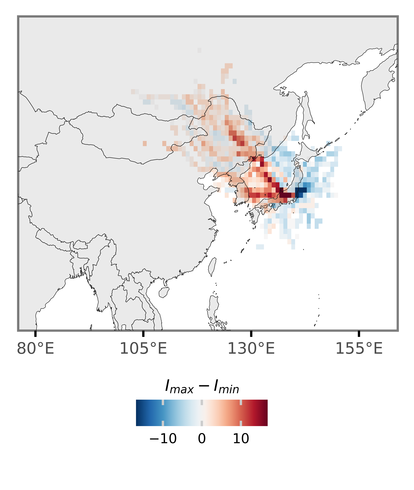
LIDAR and SWC plots#
absc_df = (pd.read_csv('../data/absc532_1064_TKB_TKO_TYM_2010_16.csv')
.assign(date=lambda dd: pd.to_datetime(dd.date))
)
swc_df = (pd.read_csv('../data/subweekly_TW84_absc532_1064_TKB_TKO_TYM_2010_16.csv')
.rename(columns={'DatesH': 'date'})
.assign(date=lambda dd: pd.to_datetime(dd['date']))
)
(swc_df
.set_index('date')
.melt(ignore_index=False)
.fillna(0)
.pipe(lambda dd: p9.ggplot(dd)
+ p9.aes('dd.index', 'variable', fill='value')
+ p9.geom_tile()
+ p9.scale_x_datetime(breaks=date_breaks('2 year'))
+ p9.scale_fill_continuous('plasma', breaks=[.2, .5, .8])
+ p9.labs(x='', y='LIDAR Station', title='Synchrony between Absc$_{532}$ at 4.3-6 km and 0.1-0.6 km ', fill='$r$')
+ p9.theme(figure_size=(5, 1),
legend_key_size=7,
axis_ticks_major_x=p9.element_blank(),
axis_text_x=p9.element_blank(),
legend_text=p9.element_text(size=6, va='bottom'),
panel_grid=p9.element_blank(),
title=p9.element_text(size=8)))
)
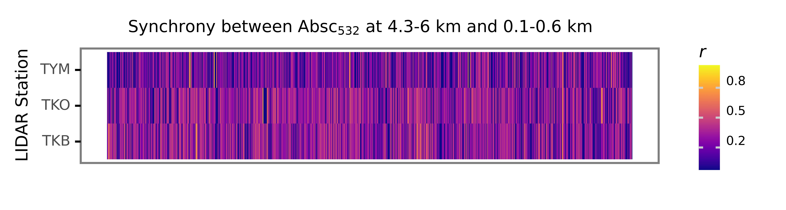
swc_presence = swc_df.set_index('date') > .5
(swc_presence
.melt(ignore_index=False)
.pipe(lambda dd: p9.ggplot(dd)
+ p9.aes('dd.index', 'variable', fill='value')
+ p9.geom_tile()
+ p9.scale_x_datetime(breaks=date_breaks('2 year'))
+ p9.scale_fill_manual(['white', 'black'])
+ p9.guides(fill=False)
+ p9.labs(x='Date', y='LIDAR Station', title='Presence of SWC (r > .5)')
+ p9.theme(figure_size=(5, 1),
panel_grid=p9.element_blank(),
title=p9.element_text(size=8)))
)
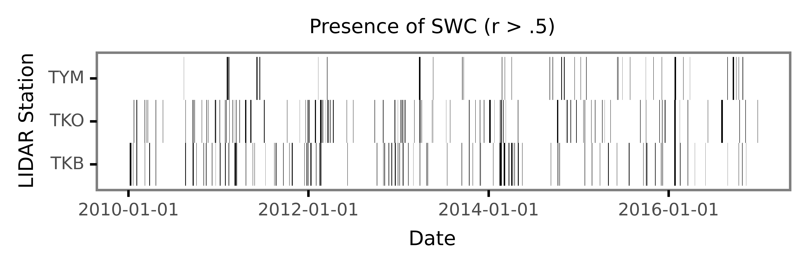
swc_presence = swc_df.set_index('date') > .4
(swc_presence
.melt(ignore_index=False)
.pipe(lambda dd: p9.ggplot(dd)
+ p9.aes('dd.index', 'variable', fill='value')
+ p9.geom_tile()
+ p9.scale_x_datetime(breaks=date_breaks('2 year'))
+ p9.scale_fill_manual(['white', 'black'])
+ p9.guides(fill=False)
+ p9.labs(x='Date', y='LIDAR Station', title='Presence of SWC (r > .4)')
+ p9.theme(figure_size=(5, 1),
panel_grid=p9.element_blank(),
title=p9.element_text(size=8)))
)
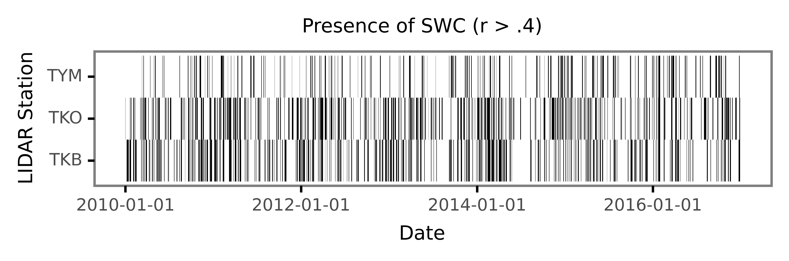
(absc_df
.set_index('date')
.melt(ignore_index=False)
.assign(station=lambda dd: dd.variable.str[-3:])
.assign(wavelength=lambda dd: dd.variable.str[4:-4].astype(int))
.loc[lambda dd: dd.wavelength==532]
.pipe(lambda dd: p9.ggplot(dd)
+ p9.aes('dd.index', 'value')
+ p9.facet_grid('station ~ .', scales='free_y')
+ p9.scale_x_datetime(breaks=date_breaks('2 year'))
+ p9.geom_line()
+ p9.labs(x='Date', y='absc532')
+ p9.theme(figure_size=(5, 2.5), axis_text_y=p9.element_text(size=6))
)
)
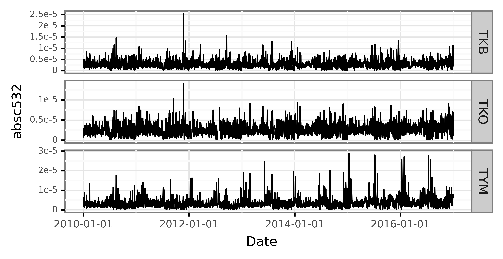
absc_df_long = (absc_df
.set_index('date')
.melt(ignore_index=False)
.assign(station=lambda dd: dd.variable.str[-3:])
.assign(wavelength=lambda dd: dd.variable.str[4:-4].astype(int))
.loc[lambda dd: dd.wavelength==532]
)
(absc_df_long.pipe(lambda dd: p9.ggplot(dd)
+ p9.aes('dd.index', 'value')
+ p9.facet_grid('station ~ .', scales='free_y')
+ p9.scale_x_datetime(breaks=date_breaks('2 year'))
+ p9.geom_line(size=.25)
+ p9.labs(x='Date', y='Absc$_{532}$')
+ p9.theme(figure_size=(5, 2.5),
axis_text_y=p9.element_text(size=6),
)
)
)
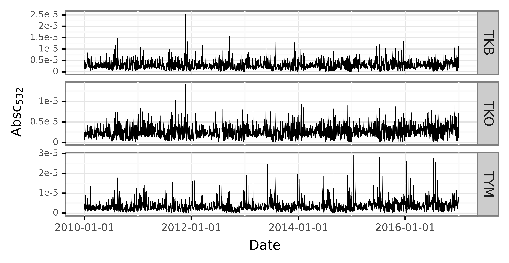
from mizani.formatters import percent_format
monthly_swc = (swc_df
.set_index('date')
.apply(lambda x: x > .5)
.resample('M')
.mean()
.melt(ignore_index=False)
.assign(date=lambda dd: dd.index - pd.to_timedelta('14 days'))
)
(monthly_swc
.pipe(lambda dd: p9.ggplot(dd)
+ p9.aes('date', 'value')
+ p9.geom_col(fill='black')
+ p9.facet_grid('variable ~ .')
+ p9.scale_x_datetime(breaks=date_breaks('2 year'))
+ p9.labs(x='Date', y='Rate of days with SWC')
+ p9.scale_y_continuous(labels=percent_format(), breaks=[.05, .15, .25])
+ p9.theme(figure_size=(5, 2.5),
axis_text_y=p9.element_text(size=6),
axis_title=p9.element_text(size=8),
panel_grid=p9.element_blank())
)
)
%load_ext rpy2.ipython
%%R
library(dplyr)
library(ggplot2)
absc_df_long = absc_df_long.reset_index()
monthly_swc = monthly_swc.rename(columns={'variable': 'station'})
%%R -i absc_df_long -i monthly_swc -w 1600 -h 900 -r 300
coef <- 1.5e4
# library(extrafont)
# font_import('Serif')
f <- ggplot(absc_df_long) +
aes(date, value) +
theme_bw() +
scale_y_continuous(name='Absc532',
# limits=c(0, .00004),
sec.axis=sec_axis(trans=~.*coef, name='Rate of days with SWC', breaks=c(0, .1, .2, .3), labels=scales::percent)) +
geom_col(aes(date, y=value / coef), fill='#AE4D4D', data=monthly_swc) +
geom_line(size=.3, alpha=.8) +
facet_wrap('station', ncol=1) +
labs(x='Date') +
theme(axis.title.y.right = element_text(color = '#AE4D4D', size=9),
axis.title.y.left = element_text(size=9),
axis.title.x = element_text(size=10),
panel.grid=element_blank(),
axis.text=element_text(size=6),
text=element_text(family='Serif'),
strip.text = element_text(size=9),
strip.background = element_rect(size=.0, color=NA, fill=NA))
ggsave('../output/figures/combi_swc_absc.pdf', f, device=cairo_pdf)
f
R[write to console]: Saving 5.33 x 3 in image
(absc_df
.set_index('date')
.melt(ignore_index=False)
.assign(station=lambda dd: dd.variable.str[-3:])
.assign(wavelength=lambda dd: dd.variable.str[4:-4].astype(int))
.loc[lambda dd: dd.wavelength==532]
.reset_index()
.groupby('station')
.apply(lambda dd: dd.assign(value=dd.value / dd.value.max()))
.reset_index(drop=True)
.pipe(lambda dd: p9.ggplot(dd)
+ p9.aes('date', 'station', fill='value')
+ p9.scale_x_datetime(breaks=date_breaks('2 year'))
+ p9.geom_tile()
+ p9.labs(x='Date', y='LIDAR station', fill='Absc$_{532}$')
+ p9.scale_fill_continuous('plasma')
+ p9.theme(figure_size=(5, 1),
axis_text_y=p9.element_text(size=6),
legend_key_size=7,
legend_title=p9.element_text(size=8),
panel_grid=p9.element_blank(),
axis_title=p9.element_text(size=7),
legend_text=p9.element_text(size=6, va='bottom')
)
)
)
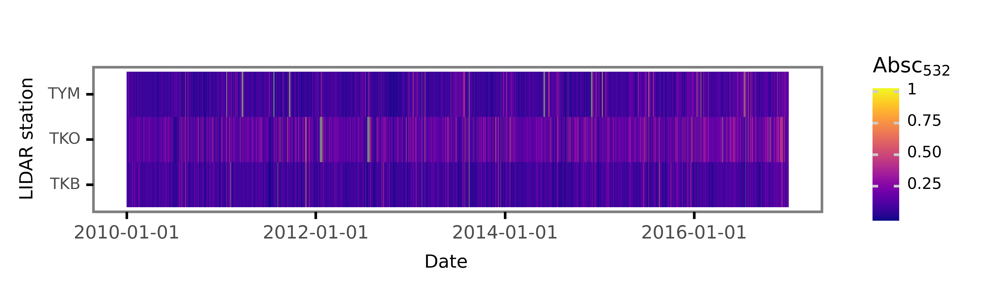